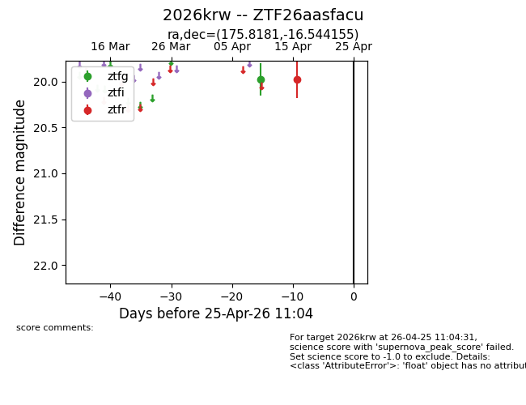
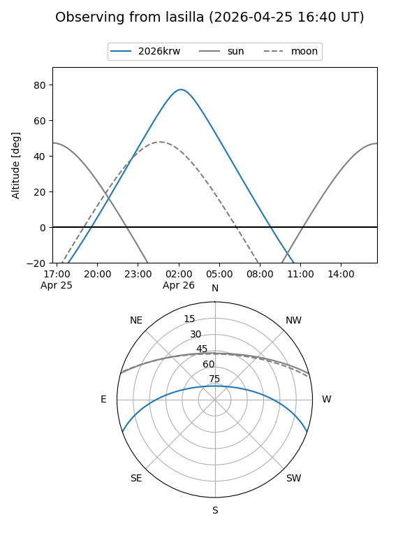
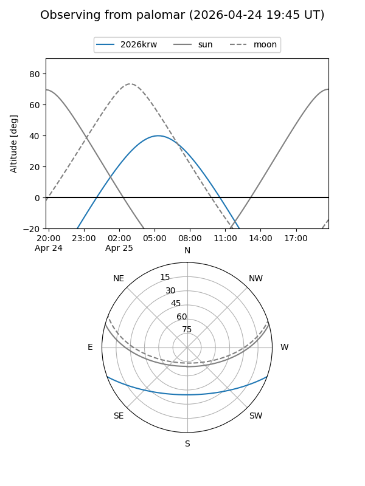

2026krw
Target 2026krw at 2026-04-25 11:05
Aliases and brokers:
FINK: link
Lasair: link
ALeRCE: link
TNS: link
YSE: link
alt names
ZTF26aasfacu (ztf,fink_ztf)
2026krw (tns,yse)
Coordinates:
equatorial (ra, dec) = 175.8181,-16.54415
equatorial (HMS+DMS) = 11:43:16.34,-16:32:38.96
galactic (l, b) = (280.2245,+43.30178)
Flags:
Photometry:
last ztfg=19.98, ztfr=19.97
1 ztfg, 1 ztfr detections
Lightcurve

Visibility


Additional plots